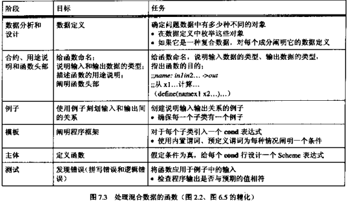

Contents
数据混合与区分
之前设计的函数都是只能处理一种类型的数据。
这章要讲的是同一个函数如何能处理不同的类型的数据。
其实很简单，在函数的开头， 通过一定的方法先判断一下传入的数据属于哪一类型即可。
1 2 3 4 5 6 7 8 9 10 11 12 13 | (define PI 3.14)
(define-struct square (nw length))
;; nw为posn结构体， length为数值
(define-struct circle (center radius))
;; center为posn结构体， radius为数值
;; perimeter: a-shape -> number
;; 传入一个图形来获取其周长（只支持正方形、圆形）
(define (perimeter a-shape)
(cond
((square? a-shape) (* (square-length a-shape) 4))
((circle? a-shape) (* 2 (circle-radius a-shape) PI))))
|
习题7.1.3
1 2 3 4 5 6 | ;; area: a-shape -> number
;; 传入一个图形来获取其面积（只支持正方形、圆形）
(define (area a-shape)
(cond
((square? a-shape) (sqr (square-length a-shape)))
((circle? a-shape) (* (sqr (circle-radius a-shape)) PI))))
|
设计处理混合数据的函数
习题7.2.1
1 2 3 4 5 6 7 8 9 10 11 12 13 14 15 16 17 18 19 20 21 22 23 24 25 26 27 28 29 30 | (define-struct spider (legs space))
(define-struct elephant (space))
(define-struct monkey (intelligence space))
;; animal是下列三者之一
;; 1. 结构体：(make-spider l s)
;; l为数值，s为数值
;; 2. 结构体：(make-elephant s)
;; s为数值
;; 3. 结构体：(make-monkey (i s))
;; i为数值，s为数值
;; 模板
;; (define (f a-animal)
;; (cond
;; ((spider? a-animal) ...(spider-space a-animal)...)
;; ((elephant? a-animal) ...(elephant-space a-animal)...)
;; ((monkey? a-animal) ...(monkey-space)...)))
;; fits?: animal, number -> boolean
;; 判断笼子是否能容得下一个动物
(define (fits? animal cage-area)
(cond
[(spider? animal) (= (spider-space animal) cage-area)]
[(elephant? animal) (= (elephant-space animal) cage-area)]
[(monkey? animal) (= (monkey-space animal) cage-area)]))
;; 测试
(fits? (make-spider 6 10) 500)
(fits? (make-elephant 10000) 5000)
(fits? (make-monkey 30 1000) 800)
|
习题7.2.2
1 2 3 4 5 6 7 8 9 10 11 12 13 14 15 16 17 18 19 20 21 22 23 24 25 26 27 28 29 | (define-struct bus (area passengers))
(define-struct luxurycar (area passengers))
(define-struct coach (area passengers))
(define-struct subway (area passengers))
;; vehicle是以下四者之一
;; 1. 结构体：(make-bus a p)
;; a, p都为数值
;; 2. 结构体：(make-luxurycar a p)
;; a, p都为数值
;; 3. 结构体：(make-coach a p)
;; a, p都为数值
;; 4. 结构体：(make-subway a p)
;; a, p都为数值
;; 模板
;; (define (f a-vehicle)
;; (cond
;; [(bus? a-vehicle)
;; ...(bus-area a-vehicle)...
;; ...(bus-passengers a-vehicle)...]
;; [(luxurycar? a-vehicle)
;; ...(luxurycar-area a-vehicle)...
;; ...(luxurycar-passengers a-vehicle)...]
;; [(coach? a-vehicle)
;; ...(coach-area a-vehicle)...
;; ...(coach-passengers a-vehicle)...]
;; [(subway? a-vehicle)
;; ...(subway-area a-vehicle)...
;; ...(subway-passengers a-vehicle)...]))
|
再论函数复合
习题7.3.1
1 2 3 4 5 6 7 8 9 10 11 12 13 14 15 16 17 18 19 20 21 22 23 24 | (define PI 3.14)
(define-struct circle (center radius))
(define-struct square (nw length))
(define-struct rectangle (nw width length))
;; shape 是下列三者之一
;; 1. 结构体: (make-circle c r)
;; c是posn结构体，s是数值n
;; 2. 结构体：(make-square n l)
;; n是posn结构体，l是数值
;; 3. 结构体：(make-rectangle n w l)
;; n是posn结构体，w, l是数值
;; perimeter: shape -> number
;; 计算a-shape的周长
(define (perimeter a-shape)
(cond
[(circle? a-shape)
(* (* 2 (circle-radius a-shape)) PI)]
[(square? a-shape)
(* (square-length a-shape) 4)]
[(rectangle? a-shape)
(* 2 (+ (rectangle-width a-shape)
(rectangle-length a-shape)))]))
|
1 2 3 4 5 6 7 8 9 10 11 12 13 14 15 16 17 18 19 20 21 22 23 24 25 26 27 28 29 30 31 32 33 34 35 36 37 38 39 40 41 42 43 | (define PI 3.14)
(define-struct circle (center radius))
;; 结构体: (make-circle c r)
;; c是posn结构体，s是数值n
(define-struct square (nw length))
;; 结构体：(make-square n l)
;; n是posn结构体，l是数值
(define-struct rectangle (nw width length))
;; 结构体：(make-rectangle n w l)
;; n是posn结构体，w, l是数值
;; shape是下列三者之一
;; 1. circle
;; 2. square
;; 3. rectangle
;; perimeter: shape -> number
;; 计算a-shape的周长
(define (perimeter a-shape)
(cond
[(circle? a-shape)
(perimeter-circle a-shape)]
[(square? a-shape)
(perimeter-square a-shape)]
[(rectangle? a-shape)
(perimeter-rectangle a-shape)]))
;; perimeter-circle: circle -> number
;; 计算circle的周长
(define (perimeter-circle a-circle)
(* (* 2 (circle-radius a-circle)) PI))
;; perimeter-square: square -> number
;; 计算square的周长
(define (perimeter-square a-square)
(* (square-length a-square) 4))
;; perimeter-rectangle: rectangle -> number
;; 计算rectangle的周长
(define (perimeter-rectangle a-rectangle)
(* 2 (+ (rectangle-width a-rectangle)
(rectangle-length a-rectangle))))
|
补充练习：图形的移动
这章的练习是6.6章节的扩展。
习题7.4.1
1 2 3 4 5 6 7 8 9 10 11 12 13 14 15 16 17 18 19 20 21 22 | (define-struct circle (point radius color))
(define-struct rectangle (nw-corner width height color))
;; shape 是下列二者之一
;; 1. 结构体: (make-circle point radius color)
;; point为posn结构体，radius为一个整数，color为一个符号
;; 2. 结构体：(make-rectangle nw-corner width height color)
;; nw-color 为一个posn结构体
;; width height 为数值
;; color 为符号
;; 模板
(define (fun-for-shape a-shape)
(cond
[(circle? a-shape)
...(circle-point a-shape)...
...(circle-radius a-shape)...
...(circle-color a-shape)...]
[(rectangle? a-shape)
...(rectangle-nw-corner a-shape)...
...(rectangle-width a-shape)...
...(rectangle-height a-shape)...
...(rectangle-color a-shape)...]))
|
习题7.4.2
1 2 3 4 5 6 7 8 | ;; draw-shape: shape -> boolean
;; 将一个图形画到画布上
(define (draw-shape a-shape)
(cond
[(circle? a-shape)
(draw-a-circle a-shape)]
[(rectangle? a-shape)
(draw-a-rectangle a-shape)]))
|
习题7.4.3
1 2 3 4 5 6 7 8 9 | ;; translate-shape: shape number -> shape
;; 根据原始的图形和一个数delta，
;; 输出另外一个图形，其位于原始图形的右边
(define (translate-shape a-shape delta)
(cond
[(circle? a-shape)
(translate-circle a-shape delta)]
[(rectangle? a-shape)
(translate-rectangle a-shape delta)]))
|
习题7.4.4
1 2 3 4 5 6 7 8 | ;; clear-shape: shape -> boolean
;; 在画布上清除一个图形
(define (clear-shape a-shape)
(cond
[(circle? a-shape)
(clear-a-circle a-shape)]
[(rectangle? a-shape)
(clear-a-rectangle a-shape)]))
|
习题7.4.5
1 2 3 4 5 6 7 8 | ;; draw-and-clear-shape: shape -> boolean
;; 在画布上画出一个图形，然后过一段时间清除
(define (draw-and-clear-shape a-shape)
(cond
[(circle? a-shape)
(draw-and-clear-circle a-shape)]
[(rectangle? a-shape)
(draw-and-clear-rectangle a-shape)]))
|
习题7.4.6
1 2 3 4 5 6 7 8 | ;; move-shape: delta shape -> shape
;; 绘制并消除一个图形，再平移delta个像素
(define (move-shape delta a-shape)
(cond
[(circle? a-shape)
(move-circle a-shape)]
[(rectangle? a-shape)
(move-rectangle a-shape)]))
|
输入错误
习题7.5.1
1 2 3 4 5 6 7 8 9 | (define PI 3.14)
(define (area-of-disk r)
(* PI (* r r)))
(define (checked-area-of-disk v)
(cond
[(and (number? v) (> v 0)) (area-of-disk v)]
[else (error 'check-area-of-disk "positive number expected")]))
|
习题7.5.2
懒得到各章节找对应的函数了。
习题7.5.3
1 2 3 4 5 6 7 8 9 10 11 12 13 | (define-struct vec (x y))
;; 结构体: (make-vec x y)
;; x, y 都为正数
(define (positive-number? v)
(and (number? v) (> v 0)))
(define (check-make-vec x y)
(cond
[(and (positive-number? x)
(positive-number? y))
(make-vec x y)]
[else (error 'check-make-vec "positive number expected")]))
|